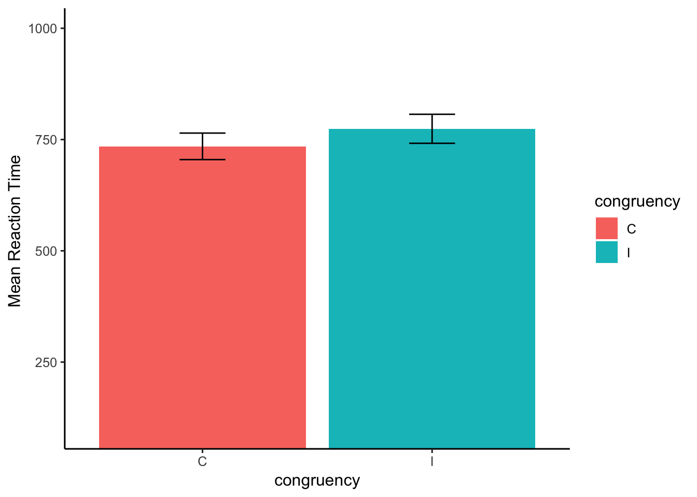

In a flanker task, participants identify a central stimulus (as quickly and accurately) as possible, while ignoring distracting stimuli presented on the left or right of the central stimulus (the flankers).
The data for this assignment come from a flanker task where participants responded to many flanker stimuli over several trials.
library(data.table)
library(dplyr)
library(ggplot2)
library(bit64)
# get the file names
file_names <- list.files(path="FlankerData")
# create headers for each column
the_headers <- c("stimulus","congruency","proportion",
"block","condition","dualtask","unknown",
"stimulus_onset","response_time","response","subject")
# Load data
# create empty dataframe
all_data<-data.frame()
# loop to add each file to the dataframe
for(i in file_names){
one_subject <- fread(paste("FlankerData/",i, sep=""))
names(one_subject) <- the_headers
one_subject$subject <- rep(i,dim(one_subject)[1])
one_subject <- cbind(one_subject, trial= 1:dim(one_subject)[1])
all_data <- rbind(all_data,one_subject)
}Create an accuracy column that codes whether the response was correct or incorrect on each trial
center_let<-unlist(lapply(strsplit(all_data$stimulus,""),
FUN=function(x)unlist(x)[2]))
all_data<-cbind(all_data,center_let)
all_data<-all_data %>%
mutate(response=tolower(response),
center_let=tolower(center_let),
accuracy=response==center_let)Add a column that calculates the reaction time on each trial.
# Somehow the stimulus and the response time are the same number?
all_data <- all_data %>%
mutate(RT = as.integer(response_time - stimulus_onset))Check how many trials each subject completed in the congruent and incongruent conditions, the mean accuracy for each subject in each congruency condition, and the mean RT for each subject in each congruency condition.
Sub_Trials <- all_data %>%
mutate(subject = as.factor(subject),
congruency = as.factor(congruency)) %>%
group_by(subject,congruency) %>%
summarise(num_trials = length(RT),
mean_RT = mean(RT),
mean_accuracy = mean(accuracy))
knitr::kable(Sub_Trials)| subject | congruency | num_trials | mean_RT | mean_accuracy |
|---|---|---|---|---|
| 1.txt | C | 96 | 550.5312 | 0.9166667 |
| 1.txt | I | 96 | 548.9375 | 0.9270833 |
| 10.txt | C | 96 | 1075.3646 | 0.9479167 |
| 10.txt | I | 96 | 1140.5521 | 0.9166667 |
| 11.txt | C | 96 | 708.2083 | 0.9375000 |
| 11.txt | I | 96 | 852.8958 | 0.9583333 |
| 12.txt | C | 96 | 622.8542 | 0.9270833 |
| 12.txt | I | 96 | 682.3854 | 0.0833333 |
| 13.txt | C | 96 | 545.4375 | 0.8958333 |
| 13.txt | I | 96 | 598.9375 | 0.8229167 |
| 14.txt | C | 96 | 719.7708 | 0.9687500 |
| 14.txt | I | 96 | 742.8333 | 0.9375000 |
| 15.txt | C | 96 | 631.7917 | 0.9895833 |
| 15.txt | I | 96 | 689.6458 | 0.9791667 |
| 16.txt | C | 96 | 572.5104 | 0.9583333 |
| 16.txt | I | 96 | 584.9062 | 0.9687500 |
| 17.txt | C | 96 | 633.2812 | 0.9687500 |
| 17.txt | I | 96 | 620.8958 | 0.9479167 |
| 18.txt | C | 96 | 802.3542 | 1.0000000 |
| 18.txt | I | 96 | 817.5938 | 0.9583333 |
| 19.txt | C | 96 | 1002.3542 | 0.9791667 |
| 19.txt | I | 96 | 1105.2917 | 0.9895833 |
| 2.txt | C | 96 | 1002.9167 | 1.0000000 |
| 2.txt | I | 96 | 1008.2917 | 0.9583333 |
| 20.txt | C | 96 | 669.8542 | 0.9895833 |
| 20.txt | I | 96 | 690.9688 | 1.0000000 |
| 21.txt | C | 96 | 840.6667 | 1.0000000 |
| 21.txt | I | 96 | 904.8646 | 1.0000000 |
| 22.txt | C | 96 | 795.1250 | 0.9687500 |
| 22.txt | I | 96 | 713.2083 | 0.9479167 |
| 3.txt | C | 96 | 812.5104 | 0.9895833 |
| 3.txt | I | 96 | 803.8646 | 0.9687500 |
| 4.txt | C | 96 | 815.3542 | 0.9895833 |
| 4.txt | I | 96 | 901.7500 | 0.9791667 |
| 5.txt | C | 96 | 819.5104 | 0.9791667 |
| 5.txt | I | 96 | 941.4167 | 0.9687500 |
| 6.txt | C | 96 | 667.9583 | 0.9687500 |
| 6.txt | I | 96 | 688.9688 | 0.9687500 |
| 7.txt | C | 96 | 1053.1667 | 0.9895833 |
| 7.txt | I | 96 | 1146.2604 | 1.0000000 |
| 8.txt | C | 96 | 611.8646 | 0.8645833 |
| 8.txt | I | 96 | 632.7604 | 0.9895833 |
| 9.txt | C | 96 | 695.5000 | 0.9687500 |
| 9.txt | I | 96 | 776.3646 | 0.9583333 |
Exclude all RTs that are longer than 2000 ms
# Reaction Time =0 somehow the stimulus and response are the same number
Slow_RT <- all_data %>%
filter(RT < 2000)Subject_Trials_meanRTs <- Slow_RT %>%
filter(accuracy == TRUE) %>%
group_by(subject,congruency) %>%
summarise(mean_RT = mean(RT)) congruency_means <- Subject_Trials_meanRTs %>%
group_by(congruency) %>%
summarise(meanRT = mean(mean_RT),
SEM = sd(mean_RT)/sqrt(length(mean_RT)))
knitr::kable(congruency_means)| congruency | meanRT | SEM |
|---|---|---|
| C | 734.7581 | 29.77926 |
| I | 774.1644 | 32.58895 |
ggplot(congruency_means, aes(x=congruency,y=meanRT,
fill=congruency))+
geom_bar(stat="identity")+
theme_classic(base_size=12)+
ylab("Mean Reaction Time ")+
geom_errorbar(aes(ymin=meanRT-SEM,
ymax=meanRT+SEM),
position=position_dodge(width=0.9),
width=.2,
color="black")+
coord_cartesian(ylim=c(100,1000))